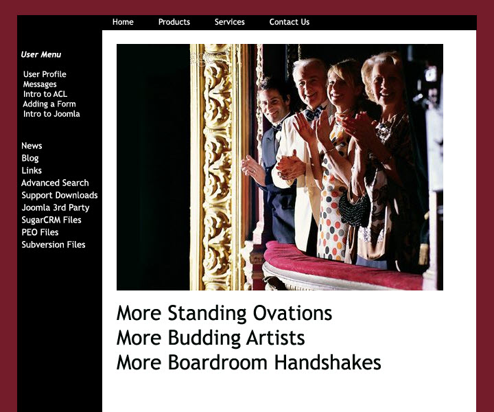
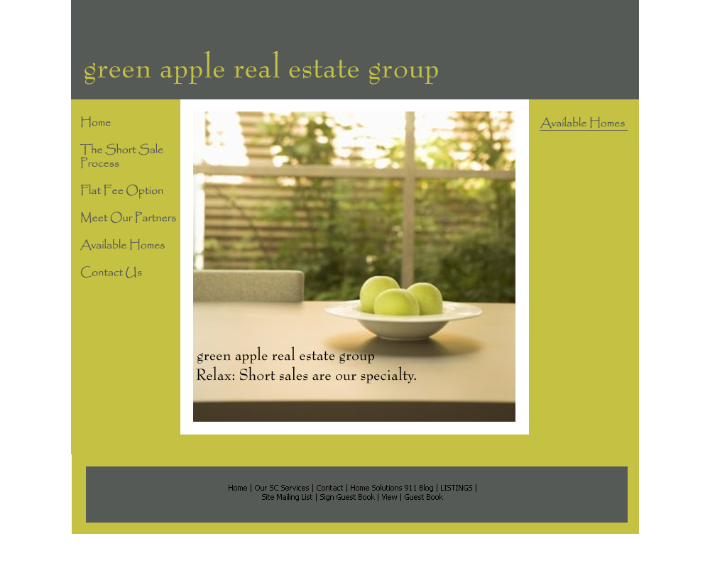
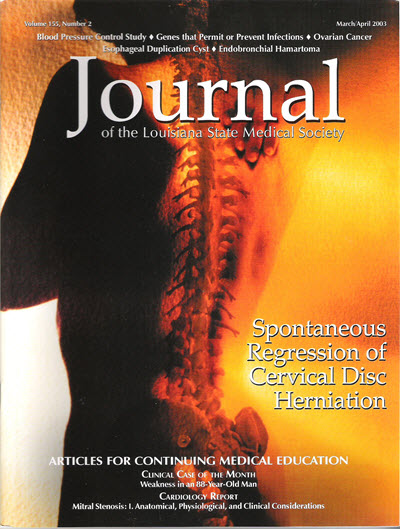
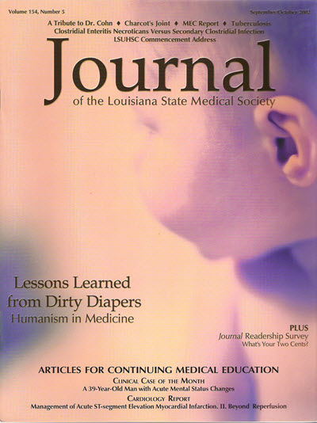
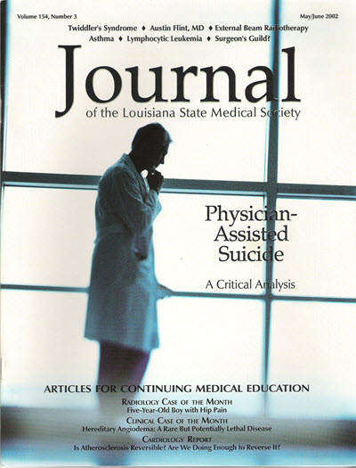

Content Samples
I have 10 years of experience producing rich content. I designed posters, wrote blog posts, created websites, wrote and designed newsletters, and edited medical journals.
Websites
MkDocs Website
This website is made from my GitHub repository using the MkDocs static site format.
2025 Actor Portfolio
2010 Actor Portfolio
2012 Portfolio
2014 Portfolio
Proposals
Promote a CRM SoftWare for Theater Companies
- Goal: Increase sales of CRM software by showing the advantages of using Alliance Software Corporation's services.

Promote a Real Estate Company that Specializes in Short Sales
- Goal: Assure potential customers of more relaxed experience when dealing with real estate short sales.

Theater Banner
- Goal: Entice the General Public to Come to the Play
- Goal: Provide an idea of the play's plot
- BTW, the play won a Best of Charleston Award that year!

Journal of the Louisiana State Medical Society
- Designed the covers and page layouts
- Edited the text
Spontaneous Regression of Cervical Disc Hernication

Lessons Learned from Dirty Diapers

Malicious Prosecution
Physician Assisted Suicide
